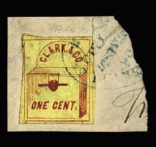
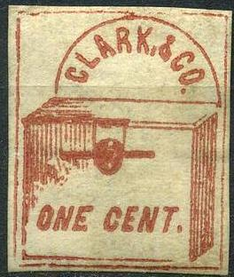
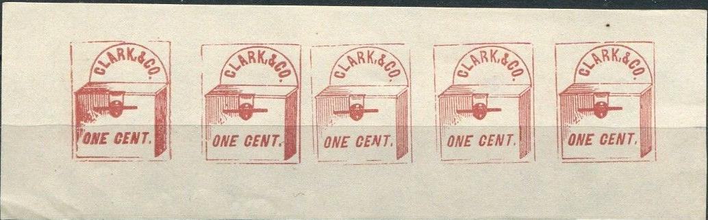
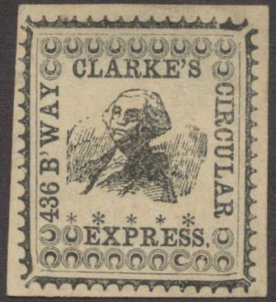
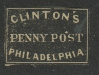
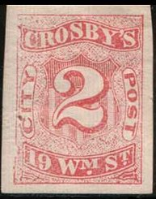
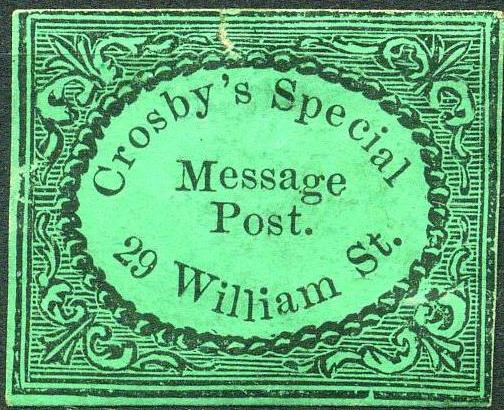
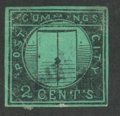

Image obtained from http://www.siegelauctions.com/2000/830/y830119.htm
Return To Catalogue - United States locals overview - Cheever&Towle to City Letter Express - Cuttings to Essex - United States
Note: on my website many of the
pictures can not be seen! They are of course present in the cd's;
contact me if you want to purchase the catalogue.
Cheever&Towle to City Letter Express
Image obtained from
http://www.siegelauctions.com/2000/830/y830119.htm
Issued for New York in 1845, extremely rare, only 6 stamps are known to have survived. The only value issued was black on grey (no value indication).

This stamp was issued in 1857 in red on yellow in New York (no other colours!). Note that similar stamps exist with the inscription "Brady & Co".
Forgeries and reprints:
Some forgeries were produced by S. Allan Taylor, Hussey and others, also in many colours not corresponding to the original red on yellow. Examples:

Some forgeries with the "O" of "ONE" as in
the genuine stamp (most forgeries have the "O"
different)

Another forgery.
(Reduced size, image obtained from a Siegel auction)
This stamp (1 c black on lilac) was issued in 1851. These stamps are extremely rare, only 5 stamps have survived.
The design of this stamp seems to consist of horizontal lines.
(Genuine, reduced sizes, images obtained from a Siegel auction)
Around 1865 this stamp with the design of George Washington was issued in two colours: blue and black. Both are extremely rare.

Forgery of the black stamp. The text at the left hand side is
inverted.
Genuine
Only a 1 c black was issued. This stamp is extremely rare (only two? copies have survived). I presume the stamps below are forgeries. Due to the amount of forgeries, this issue was longtime presumed to be a bogus issue. I do not know how many forgeries exist (at least five different types).

I've also seen bogus colour in red or violet, etc.
(Genuine, image obtained from a Siegel auction)
Only 5 stamps of this green stamp are known to exist (3 on cover). They were issued in 1853 in Baltimore.
(Genuine, image obtained from a Siegel auction)
Two stamps were issued, a red one and a red on blue one (both no value indicated). They were issued in 1856 in New York.
The above forgery was printed by Thomas Woods in 1866 for George Hussey. A total of 3000 of these forgeries were printed.
(Genuine, reduced size, image obtained from a Siegel auction)
In 1856 Cressman & Co's Penny Post issued two stamps: a gold on black stamp and a gold on lilac stamp. I think the next stamps are forgeries (note the position of the "D" of "PHILAD" with respect to the "P" of "POST", or the "C" of "CRESSMAN" with respect to the "P" of "PENNY".
Another forgery:

(Reduced sizes, the block at the right shows the printer's name:
J.W.Scott)
Issued in 1870, the only value that exist is a 2 c red. This stamp is not very rare in unused condition, it was printed by J.W.Scott & Co (!). Nevertheless forgeries exist:
Forgeries, examples:
Taylor forgeries in violet and green, I've also seen this forgery
in red, brown and blue.
For other Taylor forgeries in other colours (brown and blue) click here. The Taylor forgeries resemble quite closely the genuine design, except that the letters are slightly different (see for example the 'O' of 'CROSBY').
Other forgery, similar in design to the Browne&Co local
stamps. I've also seen this forgery in the color blue and brown.
I have also seen the above forgery in the colour black.

A bogus issue for Crossby's Special Message Post 29 William St.
(Genuine stamps, reduced sizes, images obtained from a Siegel
auction)
Cummings' City Post operated in New York and started issuing stamps in 1844. Three values in the above design were issued: 2 c black on lilac, 2 c black on green and 2 c black on yellow. At least five different kinds of forgeries exist. I have my doubts about the following stamps:

(Forgery, reduced size)
Forgeries
Forgery with very small 'O' in 'POST' and 'S' of 'CENTS' much
more slanting forwards than in the genuine stamp. I've also seen
this forgery in the color black on red.
The '2' is much fatter in the above forgeries
Genuine, image obtained from a Siegel auction
(genuine, reduced size, image obtained from a Siegel auction)
The above oval stamp is extremely rare (about 5 stamps exist), these stamps also seem to exist with 'CUMMINGS' erased, but I have never seen this.
Another design was also issued by Cumming's Post: a flying angel(?), 2 stamps in the colours black on green and black on olive. Sorry, I have no picture of these stamps.
{kind=link}
{kind=link}
{kind=link}
{kind=link}